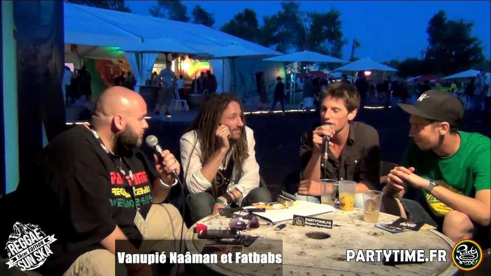
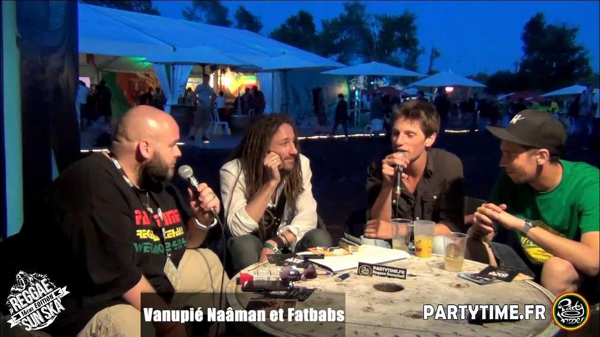
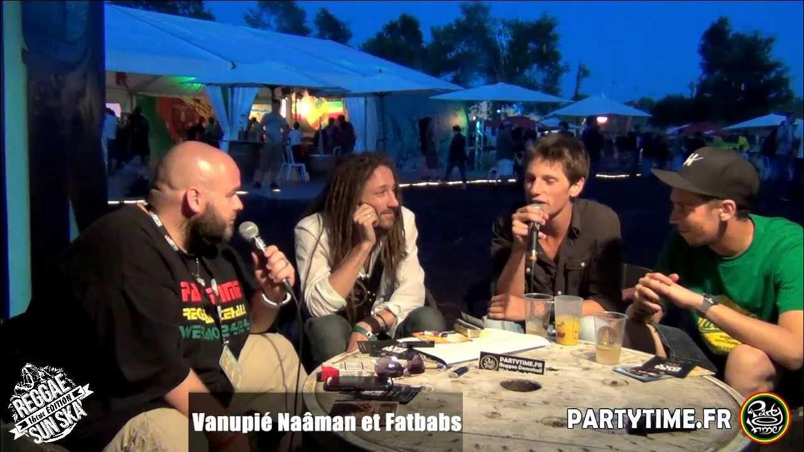
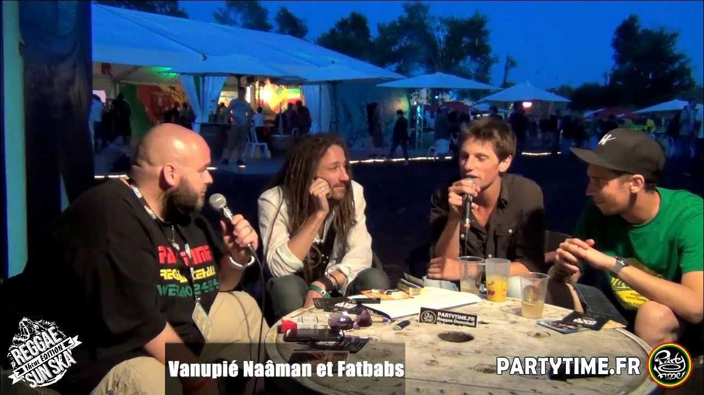
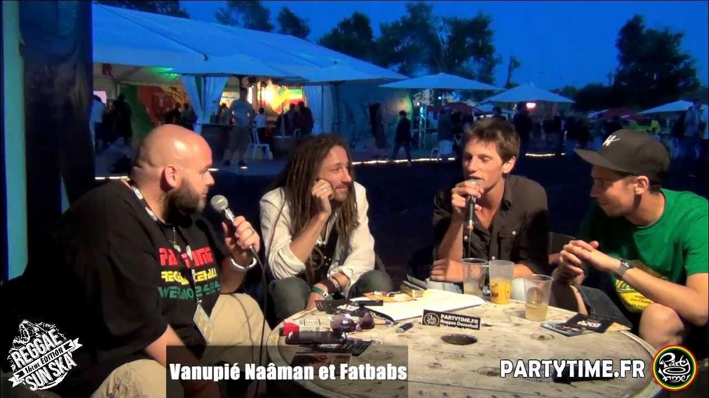

>
Accueil
Actualité
NEWS
Naâman : la planète reggae en deuil
Réalisation
ALBUMS
Deep Rockers, Back a Yard
Rays of Resistance
Beyond
Official
Temple Road
MIXTAPES & EPs
Know Yourself Mixtape
Unplugged (Live acoustic EP)
Evènenements
CONCERTS / EVENEMENTS LIVE
Live à La Cigale
Live at Reggae Sun Ska
Live Sessions (YouTube series)
Live at Festival des Vieilles Charrues
Live at Rototom Sunsplash
Live dub inc
Live at La Bellevilloise
Know Yourself Mixtape
Unplugged (Live acoustic EP)
Photos
PHOTOSHOOTS
Live la cigale
SUN SKA 2018
Live at Rototom Sunsplash
Live in Dub inc
VOYAGES
Voyages en Inde
Voyages en Jamaique
Vidéos
LIVE
Live la cigale
SUN SKA
Réseaux sociaux
Réseaux Sociaux
Instagram
Facebook
YouTube
Twitter
Spotify
Apple Music
Deezer
Amazon Music
LIENS-FANS
Sites de fans et ressources
Last.fm
Partoch.com
Musiculture.fr
Reggae.fr
Fandom
Contact
üé§ Live la cigale
üé∂ SUN SKA 2018

üé∂ Live at Rototom Sunsplash
üé∂ Live in Dub inc
üåç Voyages en Inde
üåç Voyages en Jamaique
❤️ Avec les fans
⬆

 


